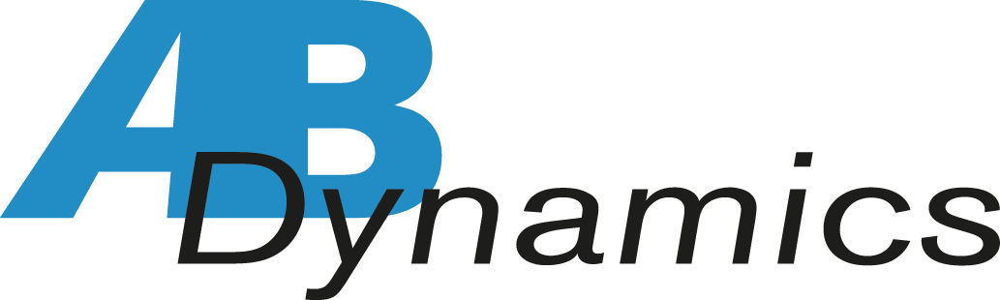
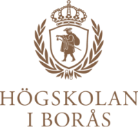

Produkter och verktyg
Erfarenhet av testnära teknik, mätkedjor, positioneringslösningar och system som används i avancerad fordonsprovning.
Tekniskt sammanhang
ANKA Tech verkar i ett tekniskt ekosystem där avancerad fordonsprovning, mätdata, positionering, verifiering och testautomation möts. Logotyperna nedan representerar produkter, plattformar, organisationer eller tekniska miljöer som vi har arbetat med, haft kontakt med eller byggt erfarenhet kring i samband med engineeringuppdrag.
Tydlig referensram
Syftet är att visa den typ av miljöer, verktyg och aktörer som är relevanta för ANKA Techs arbete. Det omfattar erfarenhet av produkter, dialoger, provningsmiljöer och branschsammanhang kopplade till ADAS, Euro NCAP, GNSS/INS, mätdata och verifiering.




Erfarenhet av testnära teknik, mätkedjor, positioneringslösningar och system som används i avancerad fordonsprovning.
Förståelse för praktiska testflöden där fordon, utrustning, scenariohantering och spårbar data behöver samverka.
Kontakt med relevanta aktörer inom fordon, forskning, konsultverksamhet och säkerhetsrelaterad provning.
Engineeringvärde
Avancerad provning kräver kontroll över utrustning, testflöden, scenarier, data och praktiska begränsningar. ANKA Tech bidrar med engineeringstöd som knyter ihop delarna till tydliga, användbara och verifierbara resultat.